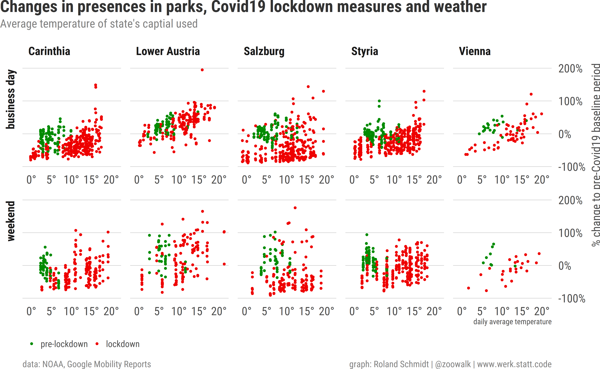

This is a short update on my previous post dealing with Google’s mobility reports on Austria during the Covid-19 crisis.
This is a short update on my previous post dealing with Google’s mobility reports on Austria. Since the last post was published, the (at least preliminary) peak of the epidemic has passed, restrictions are lifted one after the other , and the country is gradually ‘re-booted’. Against this background, I thought it might be instructive to see how this is reflected in Google’s mobility reports.
To recap, Google’s mobility reports present data on the change of numbers of individuals staying at particular types of places (e.g. parks, groceries, transit stations etc) by using the pertaining data of Android’s location history (which users knowingly or unknowingly have activated). An exception is the location type ‘residential’ which captures the change of duration of people’s stays. Changes are calculated by contrasting each weekday’s value with the median value of the same weekdays from a pre-Covid19 baseline period. For details see Google’s pertaining info.
Most of the relevant R code for this post is folded in chunks in the text. The repo including with the full code for this post is available at my github. This post is also my first use of RStudio’s powerful shiny package, which allows you to produce e.g. responsive graphs. Have a look at this, this and this tutorial to get going.
As always, if there’s any glaring error etc. pls don’t hesitate and let me know via Twitter dm.
library(tidyverse)
library(here)
library(extrafont)
loadfonts(device = "win", quiet = T)
library(hrbrthemes)
hrbrthemes::update_geom_font_defaults(family="Roboto Condensed")
# hrbrthemes::update_geom_font_defaults(family="Plex Sans")
library(scales)
library(grid)
library(knitr)
library(geofacet)
library(paletteer)
library(ggtext)
library(glue)
library(gt)
# knit_hooks$set(wrap = function(before, options, envir){
# if (before){
# paste0('<', options$wrap, '>')
# } else {
# paste0('</', options$wrap, '>')
# }
# })
knitr::opts_chunk$set(
echo = TRUE,
fig.align = "left",
# fig.height = 5,
# fig.width = 7,
out.width = "100%",
message = FALSE,
warning = FALSE,
dpi = 300
)
options(width=180, dplyr.width = 150)
plot_bg_color <- readr::read_file(file=here::here("theme.css")) %>%
str_extract(., regex("(?<=blog-bg-color:).*?(?=;)")) %>%
str_trim() %>%
str_extract(., regex("^#\\S+"))
theme_post <- function(){
hrbrthemes::theme_ipsum_rc() +
theme(
plot.margin=margin(l=0, unit="cm"),
plot.title = element_markdown(color="grey20",
face="bold",
margin=margin(l=0, unit="cm"),
size=13),
plot.title.position = "plot",
plot.subtitle = element_text(color="grey50",
margin=margin(t=0.1, b=0.3, unit="cm"),
size=9),
plot.caption = element_text(color = "grey50",
size=7,
hjust=c(0, 1)),
plot.caption.position = "panel",
axis.title.x = element_blank(),
axis.text.x = element_text(size = 9),
axis.title.y=element_blank(),
axis.text.y = element_text(size = 9),
panel.grid.minor.x = element_blank(),
panel.grid.major.x = element_blank(),
panel.grid.minor.y = element_blank(),
panel.spacing = unit(0.25, "cm"),
panel.spacing.y = unit(0.25, "cm"),
strip.text = element_text(angle = 0,
size= 9,
vjust = 1,
face="bold"),
legend.title = element_text(color="grey30",
face="bold",
vjust=1,
size=7),
legend.text = element_text(size=7,
color="grey30"),
legend.justification = "left",
legend.box = "horizontal", #arrangement of multiple legends
legend.direction = "vertical",
legend.margin = margin(l=0, t=0, unit="cm"),
legend.spacing.y = unit(0.07, units="cm"),
legend.text.align = 0,
legend.box.just = "top",
legend.key.height = unit(0.2, "line"),
legend.key.width = unit(0.5, "line"),
text=element_text(size=5))
}
# set dates ---------------------------------------------------------------
#dates on lockdown
date.start.lockdown <- tibble(date=as.Date("2020-03-14"), event="start of lockdown")
date.opening.shops.small <- tibble(date=as.Date("2020-04-14"), event="small shops reopen")
date.opening.shops.all <- tibble(date=as.Date("2020-05-04"), event="all shops reopen")
date.schools <- tibble(date=as.Date("2020-05-18"), event="schools reopen")
date.restaurants <- tibble(date=as.Date("2020-05-15"), event="restaurants reopen")
df_dates <- bind_rows(date.start.lockdown, date.opening.shops.all, date.opening.shops.small,
date.schools, date.restaurants) %>%
mutate(label=paste0(event, " (", format(date, "%d %b"), ")")) %>%
mutate(label.2=paste0(format(date, "%d %b"), ", ", event)) %>%
arrange(date) %>%
mutate(label=fct_inorder(label))
#dates on holidays in Austria
df_holidays <- jsonlite::fromJSON("https://date.nager.at/api/v2/publicholidays/2020/AT ") %>%
mutate(date=lubridate::ymd(date))
# import csv --------------------------------------------------------------
# file_link <- "https://www.gstatic.com/covid19/mobility/Global_Mobility_Report.csv"
# df_AT_mobility <- readxl::read_xlsx(path=here::here("_blog_data", "update_mobility_reports",
# "Global_Mobility_Report_AT.xlsx")) %>%
# filter(country_region_code=="AT")
#
# readr::write_csv2(df_AT_mobility, file=here::here("_blog_data", "update_mobility_reports",
# "AT_mobility_report.csv"))
df_AT_mobility <- readr::read_csv2(file=here::here("_blog_data", "update_mobility_reports", "AT_mobility_report.csv"))
df_mobility_AT <- df_AT_mobility %>%
mutate(sub_region_1=case_when(is.na(sub_region_1) ~ "State level",
TRUE ~ as.character(sub_region_1)))
df_AT_long <- df_mobility_AT %>%
pivot_longer(cols=contains("baseline"),
names_to="type",
values_to="value") %>%
mutate(week.day=lubridate::wday(date, label=T), .after=date) %>%
mutate(sub_region_1=forcats::as_factor(sub_region_1))
df_AT_long <- df_AT_long %>%
mutate(place.description=case_when(str_detect(type, "retail") ~ "‘places like restaurants, cafes, shopping centers, theme parks, museums, libraries, and movie theaters.’",
str_detect(type, "grocery") ~ "’places like grocery markets, food warehouses, farmers markets, specialty food shops, drug stores, and pharmacies.’",
str_detect(type, "park") ~ "‘places like local parks, national parks, public beaches, marinas, dog parks, plazas, and public gardens.’",
str_detect(type, "transit") ~ "‘places like public transport hubs such as subway, bus, and train stations.’",
str_detect(type, "work") ~ "‘places of work’",
str_detect(type, "residential") ~ "‘places of residence’",
TRUE ~ as.character("missing"))) %>%
mutate(day.indicator=case_when(week.day %in% c("Sat", "Sun") ~ "weekend",
date %in% df_holidays$date ~ "public holiday",
TRUE ~ as.character("business day"))) %>%
mutate(type=str_remove(type, "_percent.*$") %>% str_replace_all(., "_", " ") %>%
str_to_title(.))
Below a shiny app which allows you to select the type of place and get the corresponding results displayed. Since this blogdown site is rendered with Hugo and hence a static website, shiny can’t be run ‘directly within’ the site. To overcome this, shiny apps are hosted externally and subsequently embedded via an iframe. the code for the app is available here.
#<iframe height="1000" width="100%" frameborder="no" src="https://werkstattcodes.shinyapps.io/Shiny_Corona_Mobility_Reports/"> </iframe>
Select the type of place in the dropdown and the graph should subsequently update.
Each dot represents a day. The location on the y-axis represent the % change relative to the median value for the same weekdays during the baseline period from 3 January to 6 February (= before Covid19 related restrictions were implemented). The color indicates whether it’s a business, weekend or holiday. The difference is insofar of relevance, since individuals’ mobility patterns are different during business, weekend and holidays and Covid19 restrictions hence have different consequences. The vertical lines indicated dates pertaining to the introduction and gradual withdrawal of the lockdown.
Groceries and pharmacies have experienced a strong recovery if compared to other types of places. With the exception of Tyrol and Salzburg (absence of tourists?), values have returned to or slightly exceed pre-Corona values now. After all, you somehow have to get your food and medicine. The reopening of all shops on 4 May seems to have triggered a particularly strong jump in the numbers.
Mobility patterns for parks are particularly strongly fluctuating. By Google’s own account, numbers for ‘visitors to parks are heavily influenced by the weather’. Acting on the maxim to never let a distraction go unused, let’s contrast temperature data with mobility patterns for parks.
To account for temperature, I draw on the rnoaa package which facilitates access to the comprehensive dataset of the US National Oceanic and Atmospheric Administration (unfortuantely though, it doesn’t provide data for all nine Austrian states.1)
library(rnoaa)
#get all stations in Austria
df_AT <- ncdc_stations(locationid='FIPS:AU')$data
#only those of interest
df_stations <- df_AT %>%
filter(str_detect(name, regex("Wien|Salzburg|Graz|Klagenfurt|Poelten", ignore_case = T)))
#get temperature data
df_res <- ncdc(datasetid = "GHCND", stationid = df_stations$id, datatypeid = "TAVG", startdate = "2020-01-01", enddate = "2020-06-01",
add_units=T, limit=1000)
df_temps <- df_res$data %>%
mutate(date=lubridate::ymd_hms(date) %>% as.Date()) %>%
mutate(tavg=value/10) %>% #! tenth celcius
left_join(., df_stations %>%
select(name, id) %>%
distinct(name, id),
by=c("station"="id")) %>%
mutate(state=case_when(str_detect(name, regex("Wien", ignore_case = T)) ~ "Vienna",
str_detect(name, regex("Salzburg", ignore_case = T)) ~ "Salzburg",
str_detect(name, regex("Graz", ignore_case = T)) ~ "Styria",
str_detect(name, regex("Poelten", ignore_case = T)) ~ "Lower Austria",
str_detect(name, regex("Klagenfurt", ignore_case = T)) ~ "Carinthia"))
df_temp_mobility <- df_AT_long %>%
filter(str_detect(type, regex("park", ignore_case=T))) %>%
filter(!str_detect(sub_region_1, "State")) %>%
select(sub_region_1, date, google.value=value, day.indicator) %>%
inner_join(., df_temps %>%
select(date, state, tavg),
by=c("date"="date", "sub_region_1"="state"))
df_temp_mobility <- df_temp_mobility %>%
mutate(lockdown.indicator=case_when(date>=as.Date("2020-03-14") ~ "lockdown",
date<as.Date("2020-03-14") ~ "pre-lockdown")) %>%
mutate(lockdown.indicator=forcats::fct_inorder(lockdown.indicator))
library(ggbeeswarm)
plot_temp <- df_temp_mobility %>%
ggplot()+
labs(x="daily average temperature",
y="% change to pre-Covid19 baseline period",
title="Changes in presences in parks, Covid19 lockdown measures and weather",
subtitle="Average temperature of state's captial used",
caption=c("data: NOAA, Google Mobility Reports", "graph: Roland Schmidt | @zoowalk | www.werk.statt.code"))+
ggbeeswarm:: geom_quasirandom(aes(x=tavg,
y=google.value,
color=lockdown.indicator),
size=.5,
groupOnX = T)+
scale_color_manual(values=c("pre-lockdown"="#008B00",
"lockdown"="#EE0000"),
name=NULL)+
scale_y_continuous(labels=scales::label_percent(accuracy = 1,
scale=1),
limits=c(-100, 200),
position="right")+
scale_x_continuous(labels=scales::label_number(suffix="°",
accuracy = 1))+
theme_post()+
theme(
axis.title.x = element_text(size = 6,
color="grey30",
hjust=1),
axis.title.y = element_text(size = 6,
color="grey30",
hjust=1),
legend.position="bottom",
legend.direction = "horizontal",
plot.background = element_rect(fill=plot_bg_color, color=plot_bg_color),
strip.text.y = element_text(hjust=1))+
lemon::facet_rep_grid(day.indicator~sub_region_1,
repeat.tick.labels = T,
switch = "y")

Admittedly, this is an oversimplification, and I’ll only focus here on business days. But what the graph shows is that numbers in parks dropped following the lockdown as long as temperatures remained relatively low. However, once temperature started to rise, numbers increased and exceeded pre-Covid19 levels (base line period). The latter is not surprising, considering that the base line period runs 3 January to 6 February, hence much colder days.
A critical difference of the residential category is its unit of measurement. While the other categories measure changes in total visitors, the residential category shows a ‘change in duration’. According to Google’s documentation of its mobility report ‘because people already spend so much of the day at places of residence (even on workdays), the capacity for change isn’t so large.’ Even at the early stages of the lockdown, when individuals were most compliant and cautious, the pertaining values ‘only’ increased by roughly 25 %. Unsurprisingly, these changes were stronger for business days than for weekends. Gradually, even before any formal restrictions were lifted, the duration of presence has been declining. By the end of May, the pertaining values are between six and nine percent above pre-Covid19 levels.
This dynamic fits pretty well with my own, completely personal observations. While most people in our neighborhood initially left their home in very few instances, people got eventually more relaxed, spend time outside, or even returned to their workplace. The remaining gap at the end of May is likely to be also indicative for the increased use of home-office/remote work and the thousands of newly unemployed.
The data for the workplace category is imho quite impressive since it shows in someway the scale of Covid19’s economic impact. Even by the end of May, at a point in time when many restrictions were already lifted, the number of persons at their workplaces is still around 30 % lower than during pre-Covid19 levels.
A detail what is striking is the East-West difference when it comes to the dynamic during weekends. In the eastern states, numbers of weekends started to increase relatively early and in clear contrast to business days. Or to put it differently, the difference of the number of persons at their workplace at weekends before COVID and during the lockdown was higher in the west than in the east. Again, I can only speculate, but I wouldn’t surprised if tourism plays a significant part in the explanations. In areas with particularly strong tourism during the base line period (=winter, particularly Tyrol and Salzburg), work during the weekend is far much common than in other areas of Austria. Shops can open also on Sundays; hotels etc obviously as well.
Places related to retail and recreation experienced a remarkable sudden drop following the introduction of the lockdown on 14 March. Subsequently, and at a closer look, values increased almost ‘stepwise’, following the re-opening of small shops on 14 April, the opening of all other shops on 4 May and more recently the opening of restaurants and school on 18 May. What stands out is the particularly strong gap in Tyrol and Salzburg. I can only speculate, but I could imagine that this has something to do with both state’s strong tourism industry and the absence of tourists also after the removal of various restrictions.
As with most other results, the data on transit stations also reveals a steady increase, starting with the end of March. However, despite this growth there is still a considerable gap to the pre-Covid19 lockdown level. As of end of May, values are still down, ranging between -45% (Tyrol) and -16% (Carinthia). As for Vienna (-32 %), the low number ties in well with recent news reporting on the city’s public transport system.
I am not sure why the numbers related to Burgenland are missing from mid-April onward. Burgenland would be a state which - as far as I can tell - features particularly strong numbers of commuters (to Vienna). According to Google, its reports can contain gaps when the data doesn’t meet the quality and privacy threshold (i.e. not enough data to ensure anonymity; see here). As for the latter, I would be surprised if the number of commuters dropped to such a low level that revealing the pertaining numbers would facilitate identifying individual Android users. Furthermore, the numbers only started to be missing from mid-April onward, hence from a point in time when the number of persons present on transit stations was likely to increase.
Overall, I find Google’s mobility reports quite informative about where people spend their time in the course of this epidemic and the interplay with various restrictions. While the data show that ‘normality’ has almost returned in some areas (grocery), it’s still impressive how fundamental the impact remains in others (workplace, transport).
As a proxy for the weather I used the weather data for each state’s captial.↩︎
Text and figures are licensed under Creative Commons Attribution CC BY-NC-SA 4.0. The figures that have been reused from other sources don't fall under this license and can be recognized by a note in their caption: "Figure from ...".
For attribution, please cite this work as
Schmidt (2020, June 8). werk.statt.codes: Update on Google mobility reports on Austria. Retrieved from https://werk.statt.codes/post/2020-06-08-update-on-mobility-patterns/
BibTeX citation
@misc{schmidt2020update,
author = {Schmidt, Roland},
title = {werk.statt.codes: Update on Google mobility reports on Austria},
url = {https://werk.statt.codes/post/2020-06-08-update-on-mobility-patterns/},
year = {2020}
}